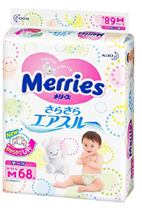
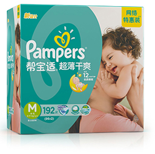

一个实验告诉你英国百诺恩到底有多干爽
EXPERIMENT
Commitment to growth up healthy
3月6号宝宝从一个新生儿进入了小baby的阶段，心里有些不舍又有些激动，回顾这三个月以来发生的种种，小baby经历了新生儿黄疸、过敏、红屁屁等等简直是一波未平一波又起，把我搞得焦头烂额。每次出现这样情况立马带宝宝去医院，日子过得真的是提心吊胆，医生说宝宝的红屁屁基本都是纸尿裤干爽差、吸收速度慢引起的，换个好点的品牌试试。
看来为了给宝宝挑选一款优质的纸尿裤，不下点功夫是不行的，同时带着像挑奶粉一样的心态去寻找一款适合宝宝的纸尿裤，于是各种论坛、社区、百度去科普，几天时间了解下来，几乎都觉得花王是最好的，可能是传入国内时间比较早，然后又被各种营销概念洗脑，以至于知名度比较高吧，其次是帮宝适，还有一款英国品牌百诺恩。
首先来说说的我的感受吧，花王和帮宝适我相信所有宝妈都有试过，自己也亲身体验过，就不做试验了。
-
日本本土花王

-
优点： 整体感觉舒适度还行，摸着软软的，薄厚也合适、吸水性也还不错，透气性跟很多品牌相差性不大。
缺点： 主要最让我失望的就是很容断层、起坨、还有点侧漏，价格吗并不是太亲民，而且很难买啊！限购就不说了，如今市场上竞争太大了，导致出现很多劣质花王，一不小心就掉进坑里了，本来是精挑细选买来最好的，回家用过之后，心中一万只草泥马奔腾而过。诶说多了，都是泪。。。。
所以花王我给3颗星
-
帮宝适 start

-
优点： 帮宝适能有效防止侧漏，300ml的水量吸收速度比较快，比较薄，适合夏天用。
缺点： 摸着不够柔软，有些粗燥感，可能于美国的散养育儿观念有关，不是太注重细节，而且很容易起坨，如果宝宝好动，建议不要使用，搞得排泄物到处都是，整体没有想象中那么好，给4颗星吧！
英国品牌百诺恩
最近一款非常受欢迎的纸尿裤，刚开始接触的时候，还是不太放心，后来买了几片试用装做过实验才开始用的，用过之后，感觉就爱上了，真的有那种『要把生命浪费在美好的事物上』的感觉。下面是英国百诺恩纸尿裤各方面的评比结果：
外包装设计：习惯了市面上各种花俏卡通图案包装，对于百诺恩刚开始还有点不适应，不过仔细品味一下，正面的色调搭配和可爱的宝宝，英伦风有没有，给人感觉别人没有我独有的气质，完全符合英国品牌的形象啊 ！
纸尿裤品质点评：打开包装袋，问了一下气味，淡淡的暖暖的香味，来自苏格兰大草原的阳光棉感觉就是不一样，用手抚摸超柔亲肌触感面层，摸上去非常柔，其表面有超过5000个超柔凸点来增加触水面积。展开纸尿裤，独特的人体工学环抱式腰围设计，极大的改善了宝宝漏尿的问题，也不会勒到宝宝的大腿。
吸水测评：注意划重点：评价一款纸尿裤好不好，最重要的就是看他的吸水性好不好，吸水速度快不快，会不会反渗，即使再贵的纸尿裤，吸收不好，不干爽的话，那都没用，吸收速度快、长效干爽的纸尿裤才是最适合宝宝的纸尿裤，为了尽可能真实反映吸收能力，我模防宝宝排尿习惯进行测试，分5次每次均匀倒水100ml，为了宝宝的健康，建议妈妈们自己动手去做一次实验。
从倒完水开始计时
最后一次，等待3个小时过后，再用干燥纸巾按压，纸巾依然干爽，无任何水渍。
从吸水速度和吸水量来看，百诺恩纸尿裤完全不输大王、帮宝适，而且没有断层、起坨现象，源于英国皇家百年的护理经验，以及无痕瞬吸技术的使用，使宝宝的亲肤层和长效干爽度大大提高，从而基本解决宝宝屁屁因潮湿而引起的红屁屁、尿布疹等皮肤问题，同时神奇锁水颗粒，有效吸收尿液，排走湿气，加上外表层极致绵柔质感，给宝宝带来由内到外的肌肤呵护。十月怀胎，十级疼痛，我们只想给宝宝最好的呵护，百诺恩亲民的价格，贵族的品质，真的非常值得推荐哦。